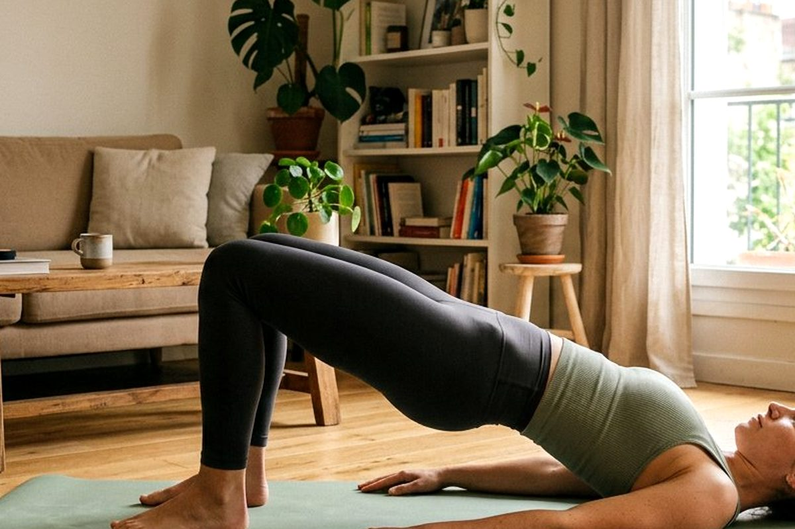

The 5-Minute Desk Break That Undoes Sitting
There is no single correct sitting posture. The research is fairly clear on this: the problem is not the shape you hold, it is holding one shape for eight hours. That is good news, because it means the fix is not a better chair — it is getting up more often, and using the time to move the joints that have been still.
